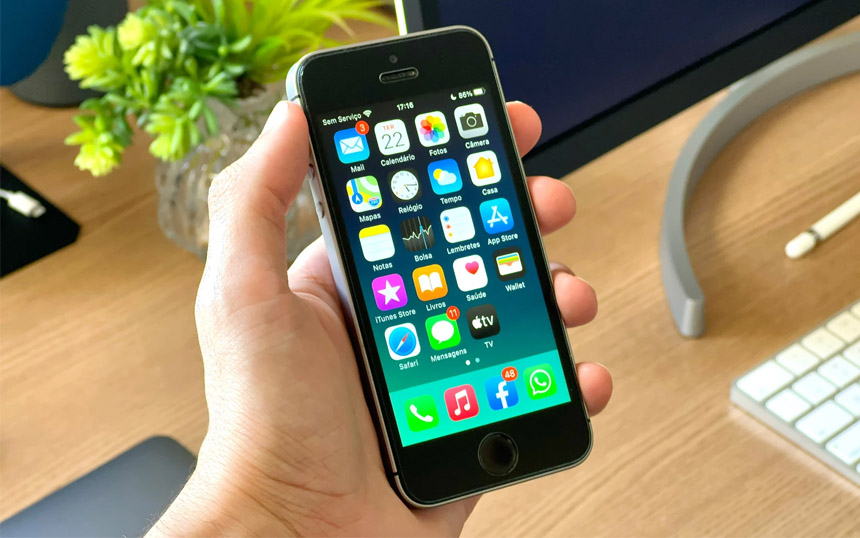
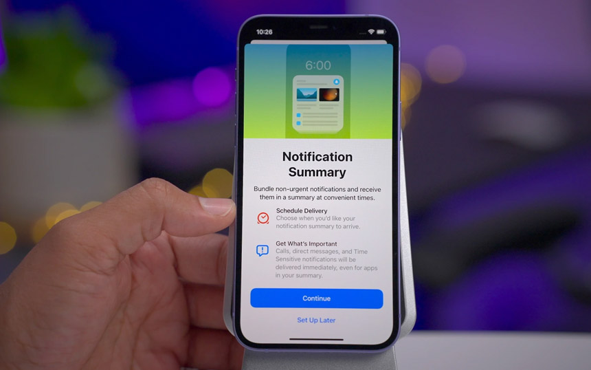
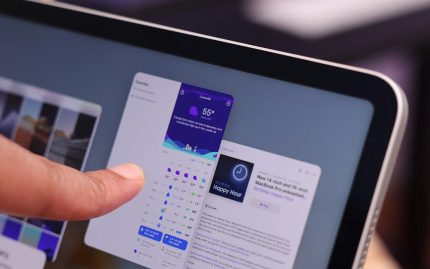

Đây là những gì chúng ta biết cho đến nay về các tính năng mới và thiết bị hỗ trợ nâng cấp iOS 16
WWDC 2022 đã được ấn định thời điểm tổ chức cùng với những dự đoán về loạt phần mềm sẽ ra mắt tại sự kiện này, trong đó nổi bật nhất là iOS 16 khi có nhiều thay đổi đáng chú ý hơn so với iOS 15. Dưới đây là những gì chúng ta biết cho đến nay về các tính năng mới và thiết bị hỗ trợ nâng cấp lên phiên bản này. Khi nào iOS 16 sẽ được công bố? Như tiền lệ, đa phần các bản cập nhật phần mềm lớn đều được Apple công bố tại WWDC - Hội nghị thường niên dành cho các nhà phát triển và lập trình viên trên toàn cầu. Năm nay, WWDC sẽ diễn ra dưới dạng livestream từ ngày 6 đến ngày 10 tháng 6, cùng với đó là những bài phát biểu quan trọng về định hướng phát triển cũng như nhiều thay đổi đáng chú ý về loạt phần mềm mới dành cho các thiết bị của Apple. Trong đó có thể sẽ bao gồm iOS 16, iPadOS 16, macOS 13, watchOS 9 v.v... Sau khi iOS 16 được công bố trong ngày đầu tiên diễn ra WWDC, có thể Apple sẽ phát hành bản beta đầu tiên dành cho các nhà phát triển. Thông thường, các bản thử nghiệm nội bộ được tung ra sau vài giờ kể từ khi phần ra mắt kết thúc. Đối với nhóm người dùng đăng ký tham gia chương trình beta công khai, thời gian dự kiến sẽ muộn hơn (thường cách khoảng 1 tháng kể từ khi bản beta nội bộ được phát hành). Các thiết bị được hỗ trợ iOS 16  Một trong những câu hỏi lớn nhất mà tất cả chúng ta đều mong chờ sau mỗi bản cập nhật lớn là Apple có loại bỏ bất kỳ thiết bị nào khỏi danh sách hỗ trợ phần mềm nay không! Với iOS 15 ra mắt vào năm ngoái, công ty vẫn duy trì khả năng tương thích với tất cả các thiết bị được hỗ trợ nâng cấp iOS 13 đến nay. Tuy nhiên, nhiều tin đồn cho biết rằng iOS 16 sẽ không tương thích với iPhone 6S, iPhone 6S Plus và iPhone SE thế hệ đầu tiên. Hiện tại, đây chỉ là thông tin đồn đoán và không rõ liệu nó có trở thành hiện thực hay không. Nếu trong trường hợp ba thiết bị trên chính thức ngừng hỗ trợ phần mềm từ iOS 16 trở đi thì không có gì lạ, bởi những chiếc máy này đã ra mắt cách đây hơn 6 năm (cuối năm 2015, đầu năm 2016). iOS 16 sẽ không được thiết kế lại giao diện người dùng Trong khi một số người dùng hy vọng rằng iOS 16 sẽ đánh dấu sự thay đổi về thiết kế đầu tiên trong nhiều năm qua, nhưng điều đó dường như không thể trở thành hiện thực khi tờ Bloomberg đưa ra những thông tin về việc phiên bản này có thay đổi một chút về thiết kế, nhưng không được đại tu hoàn toàn! Lần cuối cùng Apple thực sự thay đổi lại giao diện iOS là từ iOS 7, một thiết kế được nhiều người ưa chuộng và nhận nhiều cải tiến trong quá trình thử nghiệm sau đó. Mặc dù những phiên bản iOS tiếp theo cũng có thay đổi về thiết kế, nhưng không hoàn toàn được làm lại mà chỉ nâng cấp giựa trên ngôn ngữ thiết kế của iOS 7. Các tính năng mới trong iOS 16 Hiện tại, những tin đồn về tính năng mới của iOS 16 còn khá mơ hồ! Tờ Bloomberg báo cáo rằng phiên bản này được cho là bản nâng cấp quan trọng, mặc dù không thay đổi nhiều về thiết kế nhưng trọng tâm của năm nay sẽ là tính năng Thông báo. Việc tập trung vào thông báo được đồn đại từ lâu vì Apple gần đây đã thay đổi nhiều đối với hệ thống thông báo trên iOS, có thể kể đến như tính năng Tóm tắt thông báo và chế độ Tập trung. Tuy nhiên, công ty không thực sự hài lòng và đang có kế hoạch thay đổi nhiều hơn nữa trong năm nay.  Ngoài ra, iOS 16 cũng sẽ bao gồm các tính năng theo dõi sức khỏe mới. Apple đã biến ứng dụng Health và khả năng hoạt động của nó trên Apple Watch tahnfh tâm điểm của các bản cập nhật phần mềm trong những năm gần đây. Nhiều khả năng, các tính năng định hướng sức khỏe mới trong iOS 16 sẽ gắn liền với tính năng sức khỏe trong watchOS 9. iOS 16 cũng được đồn đại là sẽ tạo nền tảng cho nhiều tính năng AR và VR trước khi ra mắt kính thực tế hỗn hợp đầu tiên của Apple. Tuy nhiên, công ty dự kiến sẽ không sớm ra mắt thiết bị này cho đến ít nhất là cuối năm nay. Cuối cùng và cũng không kém phần quan trọng, đối với iPadOS, tin đồn duy nhất cho đến nay là Apple đang lên kế hoạch cho một giao diện đa tác vụ mới. Mặc dù công ty đã thực hiện một số thay đổi với tính năng này trên iPadOS 15 năm ngoái. 